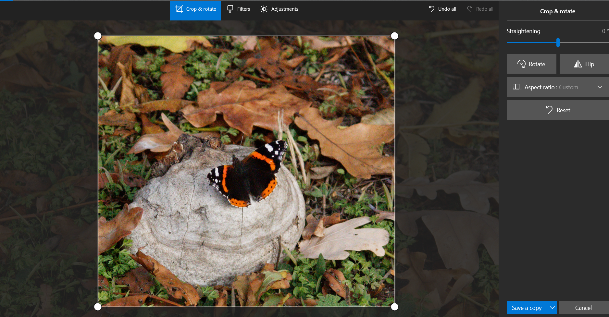
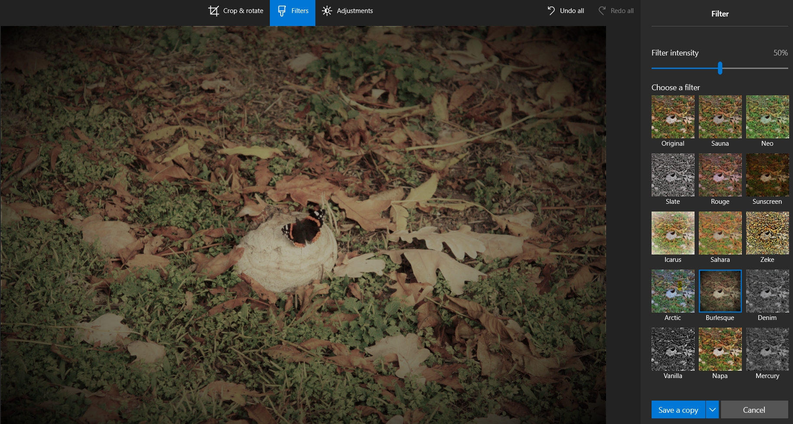
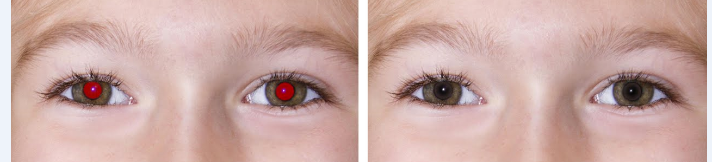
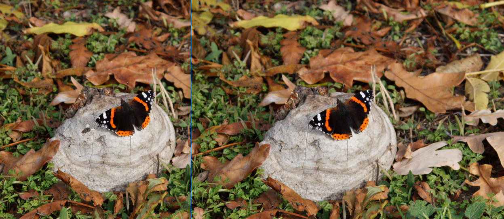
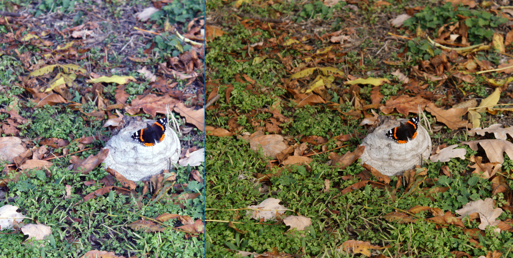

Deoarece Microsoft Windows 10 Photos este preinstalat în sistemul de operare Windows o să analizăm opțiunile de redactare cu el.
Redimensionarea imaginii
Cînd avem nevoie de un element sau a unei zone al fotografiei folosim redimensionarea ei urmând pașii:
- Click meniul Edit & Create din partea dreaptă sus
- Edit
- Crop & rotate
- Cu ajutorul cadrului selectăm porțiunea pe care dorim să o decupăm

Aplicarea filtrelor artistice Dacă dorim să recolorăm fotografia aplicăm unul din filtre și ajustăm intensitatea acestuia urmînd pașii
- Click meniul Edit & Create din partea dreaptă sus
- Edit
- Filters
- Alegem filtrul dorit, pentru imaginea noastră am ales filtrul care va accentua anotimpul din imagine

Ajustarea luminanței, saturației și eliminarea ochilor roșii din fotografie
- Click meniul Edit & Create din partea dreaptă sus
- Edit
- Adjustements
- Ajutăm light pentru nivelul de luminanță
- Ajustăm Color pentru saturație
- Clarity pentru contrast
- Eliminarea ochilor roșii, cu ajutorul Red yey deși majoritatea camerelor au deja incorporate tehnologii de eliminare o ochilor roșii însă în unele cazuri sunt posibile apariții atunci când aparatul captează lumina reflectată de către retină, alegem unealta și o amplasăm deasupra ochiului, un click și ochiul roșu dispare (fig.3)
- Eliminarea elementelor nedorite cu ajutorul spot fix, a intrat o muscă în cadrul și e un oaspete nedorit, unealta spot fix va face magie musca va dispărea dacă faceți click pe ea. (fig.4)
fig.3
fig.4
Uneori în fotografie nu este ajustat nivelul luminozității, multe aplicații au funcția de autoreglare al acestui nivel, vom folosi Paint.net pentru aceasta deschidem poza cu ajutorul aplicației și selectăm meniul Adjustments subnivelul Auto-Level
